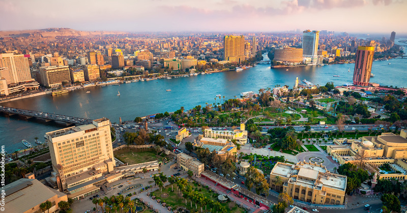

Histoire du Caire
Le Caire, capitale animée de l'Égypte moderne, est une ville dont l'histoire remonte à plus de mille ans. Fondée en 969 de notre ère par le général fatimide Jawhar al-Siqilli, la ville a été conçue comme une cité impériale grandiose, destinée à rivaliser avec les plus grandes capitales du monde. Au fil des siècles, le Caire est devenu un carrefour culturel et commercial, attirant des voyageurs, des commerçants et des érudits du monde entier.
Evenement Marquants
Le Caire a été témoin de nombreux événements marquants de l'histoire égyptienne et mondiale. De la fondation de la célèbre université d'Al-Azhar au Xe siècle, l'une des plus anciennes institutions d'enseignement supérieur au monde, à la révolution égyptienne de 2011, qui a conduit à des changements politiques majeurs dans le pays, la ville a été le théâtre de moments historiques qui ont façonné le destin de la nation.
Traditions et Culture
Le Caire est également célèbre pour ses traditions riches et variées, qui se reflètent dans sa cuisine, sa musique, son artisanat et ses festivités. Les souks animés de la vieille ville regorgent de trésors artisanaux, des tapis persans aux poteries colorées, offrant aux visiteurs une immersion authentique dans la culture égyptienne. La musique traditionnelle égyptienne, notamment le oud et le tabla, résonne dans les rues animées, tandis que les cafés locaux servent du thé à la menthe fumant et des narguilés parfumés, offrant aux habitants et aux visiteurs un refuge paisible du tumulte de la ville.
Patrimoine Architectural
Enfin, le Caire est réputé pour son riche patrimoine architectural, qui témoigne de son passé prestigieux. Des mosquées et des minarets majestueux, comme la mosquée Al-Azhar et la mosquée Sultan Hassan, dominent l'horizon, rappelant l'importance de la religion dans la vie quotidienne des Égyptiens. Les rues étroites de la vieille ville regorgent de bâtiments historiques bien préservés, offrant aux visiteurs une véritable leçon d'histoire à chaque coin de rue.
